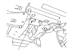

Abschleppen
|
Falls das Fahrzeug abgeschleppt werden muss, einen Abschleppdienst beauftragen. Das Fahrzeug auf keinen Fall mit einem Seil oder einer Kette von einem zweiten Fahrzeug abschleppen lassen. Das ist sehr gefährlich.
Abschleppen im Notfall
Zum Abschleppen eines Fahrzeugs gibt es drei übliche Methoden:
Tieflader -
Das Fahrzeug wird auf die Ladefläche eines Transporters geladen.
Das ist die sicherste und beste Art, das Fahrzeug zu transportieren.
Zum Anschlagen der Abschleppvorrichtungen am Transporter ist das Fahrzeug mit Schlitzen für Verzurrhaken vorn (A), Abschlepphaken hinten (B) und Schlitzen für Verzurrhaken hinten (C) ausgerüstet.
Das Fahrzeug kann mittels Abschlepphaken hinten und Winde auf den Transporter gezogen und mit Verzurrhakenschlitzen auf diesem gesichert werden.
Anbringen des vorderen Abschlepphakens
Der abnehmbare vordere Abschlepphaken ist nur zum Abschleppen über sehr kurze Strecken vorgesehen, z.B. zum Befreien des festgefahrenen Fahrzeugs. Der Haken wird an der Verankerung im vorderen Stoßfänger befestigt.

|
Vorn:

Hinten:

|